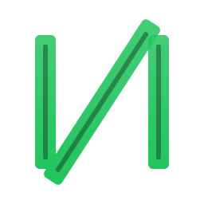
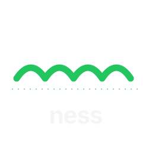
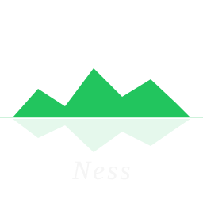
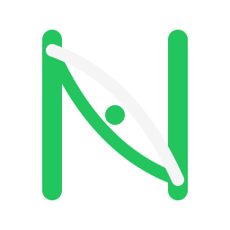
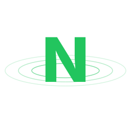
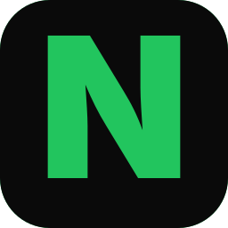

Ness — logo exploration
10 directions, all on the dark canvas. Palette held to Harness primary green + neutrals.
#22c55e primary
#fbbf24 amber accent
#f5f5f5 neutral
#262626 grid dark
#0a0a0a canvas

01 — WORDMARK
Lowercase wordmark with terminal cursor
Geometric sans, set tight, with a solid green block cursor pinned to the end. Pure dev-tool identity: declares the CLI heritage with no decoration and works as plain text in a headline.

02 — MONOGRAM
N as parallel lanes
The two posts and the diagonal of the N are rendered as track-style bars with an inner stripe. Reads as the letter at a glance, as parallel agents / worktrees on inspection. Direct metaphor for the product.

03 — WINK
Loch Ness humps cresting the water
A continuous wave silhouette of four humps over a dashed waterline, with the wordmark below. Mythic, geographic, a smile — the kind of mark that earns affection rather than respect.

04 — ETYMOLOGY
Headland silhouette
"Ness" means promontory. A jagged green coastline juts into a dark sea, paired with an italic serif wordmark. Quiet, editorial, leans into the geography without invoking the monster.

05 — HERITAGE
N built from status dots
A 7×7 grid where the N is picked out in green and the rest are dim gray, with a single amber accent for callback. Strong visual continuity with the existing Harness icon — feels like an evolution, not a reset.

terminal prompt">06 — CLI
N> terminal prompt
An uppercase N followed by a glowing green chevron, set in monospace. Reads instantly as a shell prompt; compact enough to work as a favicon. Most "this is a developer tool" of the set.

07 — MONOGRAM
Braided N — two strands meeting
The diagonal splits into two arcing strands that meet at the center. Carries the "harness" rope/yoke legacy quietly, plus a hint of merging branches. Posts are heavy, weave is the focal point.

08 — DEPTH
N with concentric ripples
A solid green N sits on top of three concentric ellipses, like a stone landing on a lake. Loch Ness reference without the creature, plus an honest evocation of focus and depth.

09 — APP ICON
Negative-space N in a rounded tile
A rounded square tile with the N punched through to reveal green. Reads correctly at favicon size and on a Mac dock. Modern, abstract, makes no claims about the name's heritage.

10 — ABSTRACT
Single green wedge
No letterform at all — just one tapered green diagonal slicing a dark field. Suggests the spine of an N or a single agent lane in isolation. Confident, quiet, defers naming to the wordmark.